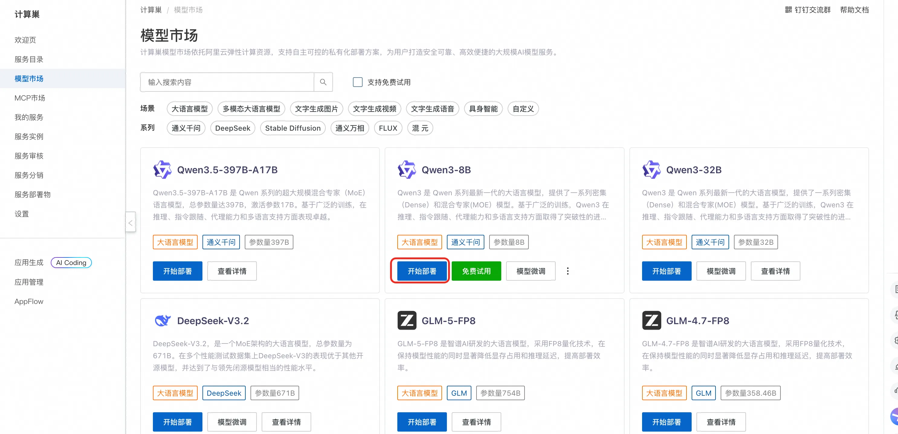
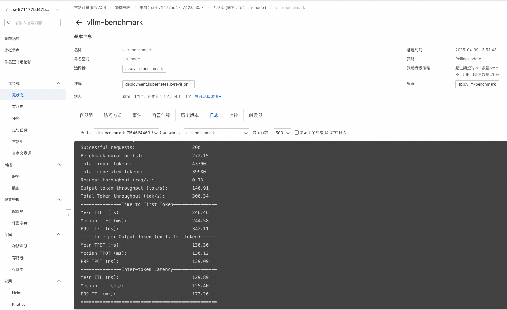

基于ACK集群的vllm大模型部署文档
部署说明
本方案通过阿里云计算巢服务实现开箱即用的大模型推理服务部署，基于以下核心组件：
VLLM：提供高性能并行推理能力，支持低延迟、高吞吐的LLM（如Qwen、DeepSeek等）推理。 ACS集群：提供托管的Kubernetes环境，支持Serverless工作负载。
部署后，用户可通过私有/公网API调用模型服务，资源利用率提升数倍，开发者无需关注底层容器编排与资源调度，仅需在计算巢控制台页面选择模型即可完成一键部署。
本服务在部署时支持不同的模型和GPU型号，包括： * QwQ32B * Deepseek满血版（671B，fp8），GPU：H20 * Deepseek满血版（671B，int8），GPU：PPU
整体架构

计费说明
本服务在阿里云上的费用主要涉及： * ACS费用 * 跳板机ECS费用 * OSS费用 计费方式：按量付费（小时）或包年包月 预估费用在创建实例时可实时看到。
RAM账号所需权限
部署实例需要对部分阿里云资源进行访问和创建操作。因此您的账号需要包含如下资源的权限。
| 权限策略名称 | 备注 |
|---|---|
| AliyunECSFullAccess | 管理云服务器服务（ECS）的权限 |
| AliyunVPCFullAccess | 管理专有网络（VPC）的权限 |
| AliyunROSFullAccess | 管理资源编排服务（ROS）的权限 |
| AliyunCSFullAccess | 管理容器服务（CS）的权限 |
| AliyunComputeNestUserFullAccess | 管理计算巢服务（ComputeNest）的用户侧权限 |
| AliyunOSSFullAccess | 管理网络对象存储服务（OSS）的权限 |
除此之外，部署前需要联系PDSA添加GPU白名单。
部署流程
-
单击部署链接。根据界面提示填写参数，可以看到对应询价明细，确认参数后点击下一步：确认订单。

-
点击下一步：确认订单后可以也看到价格预览，随后点击立即部署，等待部署完成。

-
等待部署完成后就可以开始使用服务，进入服务实例详情查看如何私网访问指导。如果选择了支持公网访问，则能看到公网访问指导。

使用说明
私网API访问
- 在和服务器同一VPC内的ECS中访问概览页的私网API地址。访问示例如下： ```shell # 私网有认证请求，流式访问 curl http://{$PrivateIP}:8000/v1/chat/completions \ -H "Content-Type: application/json" \ -H "Authorization: Bearer ${API_KEY}" \ -d '{ "model": "ds", "messages": [ { "role": "user", "content": "给闺女写一份来自未来2035的信，同时告诉她要好好学习科技，做科技的主人，推动科技，经济发展；她现在是3年级" } ], "max_tokens": 1024, "temperature": 0, "top_p": 0.9, "seed": 10, "stream": true }'
- 如果想通过公网访问API地址，部署时如果选择了支持公网访问，则直接通过公网IP访问即可，示例如下：
shell curl http://${PublicIp}:8000/v1/chat/completions \ -H "Content-Type: application/json" \ -d '{ "model": "ds", "messages": [ { "role": "user", "content": "给闺女写一份来自未来2035的信，同时告诉她要好好学习科技，做科技的主人，推动科技，经济发展；她现在是3年级" } ], "max_tokens": 1024, "temperature": 0, "top_p": 0.9, "seed": 10, "stream": true }'如果未选择支持公网访问，则需要手动在集群中创建一个LoadBalance，示例如下： ```yaml apiVersion: v1 kind: Service metadata: annotations: service.beta.kubernetes.io/alibaba-cloud-loadbalancer-address-type: "internet" service.beta.kubernetes.io/alibaba-cloud-loadbalancer-ip-version: ipv4 labels: app: deepseek-r1 name: svc-public namespace: llm-model spec: externalTrafficPolicy: Local ports:- name: serving port: 8000 protocol: TCP targetPort: 8000 selector: app: deepseek-r1 type: LoadBalancer ```
重新部署模型
重新部署模型，可以通过跳板机上执行kubectl apply命令或者直接在控制台手动输入模板来重新部署。 1. 跳板机方式 1. 进入计算巢控制台服务实例的资源界面，可以看到对应的ECS跳板机，执行远程连接，选择免密登录。

2. 进入跳板机后执行命令bash
kubectl apply -f /root/application.yaml
可以查看对应的yaml文件/root/application.yaml，并修改部署参数后执行部署。
进阶教程
-
配置弹性扩缩容
Knative提供灵活的弹性扩缩容功能，您可以参考该文档设置对应的扩缩容配置：基于流量请求数实现服务自动扩缩容, 需要注意，目前每个pod分配了一张GPU，当通过扩容得到的pod数量超过GPU数量时将会导致其余pod扩容失败。可以创建一个弹性gpu节点池，当新创建的pod 所需要gpu资源不够，处于pending的时候，通过gpu节点池弹出来新的节点供pod使用， 具体参考文档：启用节点自动伸缩。
-
自定义配置Fluid实现模型加速
服务本身默认配置了Fluid，但是对于一些需要存储空间更高的模型，需要更大的缓存空间，具体可以参考文档修改Fluid的配置参数：Fluid。 经测试，采用Fluid的加速，根据缓存大小，模型加载速度可以缩短至50%，在应对一些弹性伸缩的场景下，可以快速加载模型，显著提高性能。如下所示，其中fluid-oss-secret已经创建好，可以仅修改具体的BucketName、ModelName和具体的JindoRuntime参数：
apiVersion: data.fluid.io/v1alpha1
kind: Dataset
metadata:
name: llm-model
namespace: llm-model
spec:
mounts:
- mountPoint: oss://${BucketName}/llm-model/${ModelName} # 请替换为实际的模型存储地址。
options:
fs.oss.endpoint: oss-${RegionId}-internal.aliyuncs.com # 请替换为实际的OSS endpoint地址。
name: models
path: "/"
encryptOptions:
- name: fs.oss.accessKeyId
valueFrom:
secretKeyRef:
name: fluid-oss-secret
key: fs.oss.accessKeyId
- name: fs.oss.accessKeySecret
valueFrom:
secretKeyRef:
name: fluid-oss-secret
key: fs.oss.accessKeySecret
---
apiVersion: data.fluid.io/v1alpha1
kind: JindoRuntime
metadata:
name: llm-model # 需要与Dataset名称保持一致。
namespace: llm-model
spec:
replicas: 3
tieredstore:
levels:
- mediumtype: MEM # 使用内存缓存数据。
volumeType: emptyDir
path: /dev/shm
quota: 10Gi # 单个分布式缓存Worker副本所能提供的缓存容量。
high: "0.95"
low: "0.7"
fuse:
resources:
requests:
memory: 2Gi
properties:
fs.oss.download.thread.concurrency: "200"
fs.oss.read.buffer.size: "8388608"
fs.oss.read.readahead.max.buffer.count: "200"
fs.oss.read.sequence.ambiguity.range: "2147483647"
Benchmark
本服务基采用vllm自带的benchmark进行测试，采用的压测数据集：https://www.modelscope.cn/datasets/gliang1001/ShareGPT_V3_unfiltered_cleaned_split/files，
整体压测流程：
1. 创建一个Deployment，使用vllm-benchmark镜像。在容器中执行数据集下载、压测操作
shell
# 获取运行deepseek-r1的pod的ip
kubectl get pod -n llm-model -l app=deepseek-r1 -o jsonpath='{.items[0].status.podIP}'
```yaml
# 用上面获取到的pod ip替换下面yaml中的$POD_IP
apiVersion: apps/v1
kind: Deployment
metadata:
name: vllm-benchmark
namespace: llm-model
labels:
app: vllm-benchmark
spec:
replicas: 1
selector:
matchLabels:
app: vllm-benchmark
template:
metadata:
labels:
app: vllm-benchmark
spec:
volumes:
- name: llm-model
persistentVolumeClaim:
claimName: llm-model
containers:
- name: vllm-benchmark
image: kube-ai-registry.cn-shanghai.cr.aliyuncs.com/kube-ai/vllm-benchmark:v1
command:
- "sh"
- "-c"
- |
# 安装依赖
yum install -y epel-release && \
yum install -y git git-lfs && \
git lfs install &&
# 下载数据集
git clone https://www.modelscope.cn/datasets/gliang1001/ShareGPT_V3_unfiltered_cleaned_split.git /root/ShareGPT_V3_unfiltered_cleaned_split
# 执行基准测试
python3 /root/vllm/benchmarks/benchmark_serving.py \
--backend vllm \
--model /llm-model/deepseek-ai/DeepSeek-R1 \
--served-model-name ds \
--trust-remote-code \
--dataset-name sharegpt \
--dataset-path /root/ShareGPT_V3_unfiltered_cleaned_split/ShareGPT_V3_unfiltered_cleaned_split.json \
--sonnet-input-len 1024 \
--sonnet-output-len 6 \
--sonnet-prefix-len 50 \
--num-prompts 200 \
--request-rate 1 \
--host $POD_IP \
--port 8000 \
--endpoint /v1/completions \
--save-result
# 保持容器运行
sleep inf
volumeMounts:
- mountPath: /llm-model
name: llm-model
```
- 直接在acs控制台查看容器日志或者进入容器查看容器日志

测试结果示例：
============ Serving Benchmark Result ============
Successful requests: 200
Benchmark duration (s): 272.15
Total input tokens: 43390
Total generated tokens: 39980
Request throughput (req/s): 0.73
Output token throughput (tok/s): 146.91
Total Token throughput (tok/s): 306.34
---------------Time to First Token----------------
Mean TTFT (ms): 246.46
Median TTFT (ms): 244.58
P99 TTFT (ms): 342.11
-----Time per Output Token (excl. 1st token)------
Mean TPOT (ms): 130.30
Median TPOT (ms): 130.12
P99 TPOT (ms): 139.09
---------------Inter-token Latency----------------
Mean ITL (ms): 129.89
Median ITL (ms): 125.40
P99 ITL (ms): 173.20
==================================================